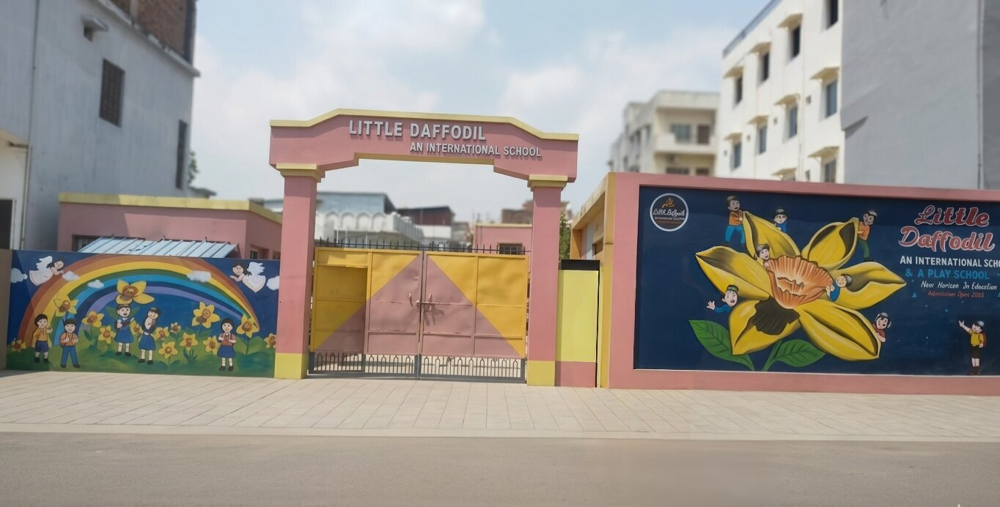
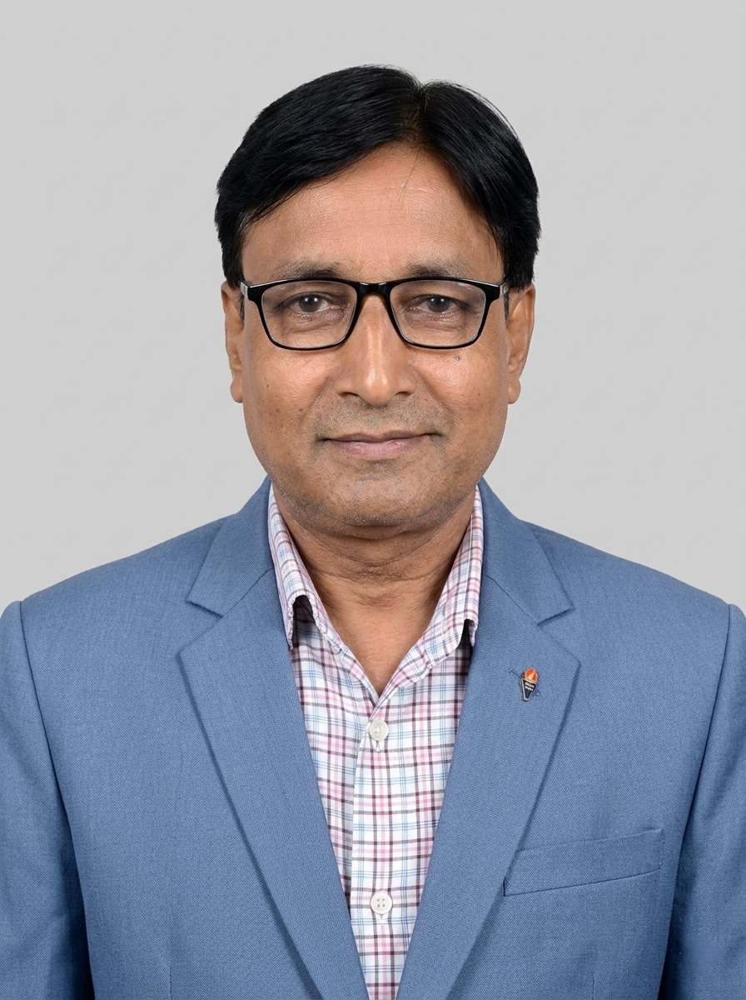
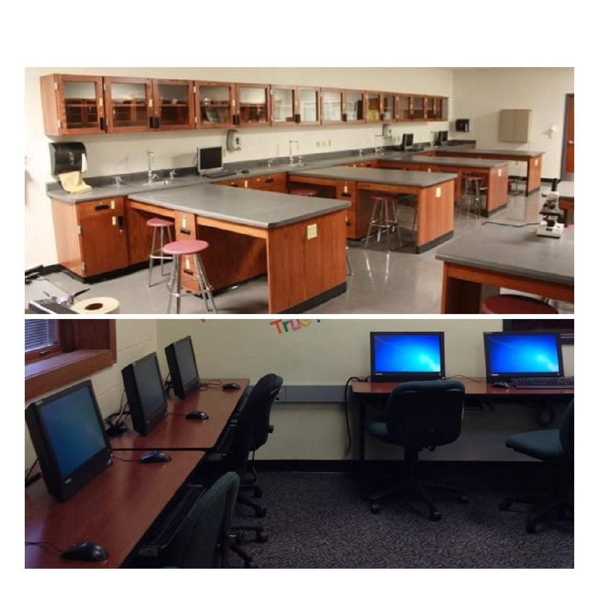
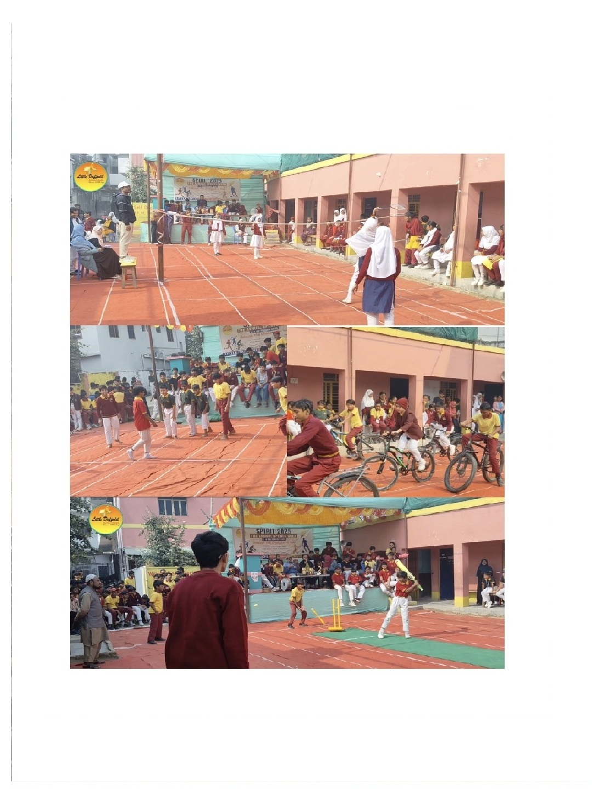
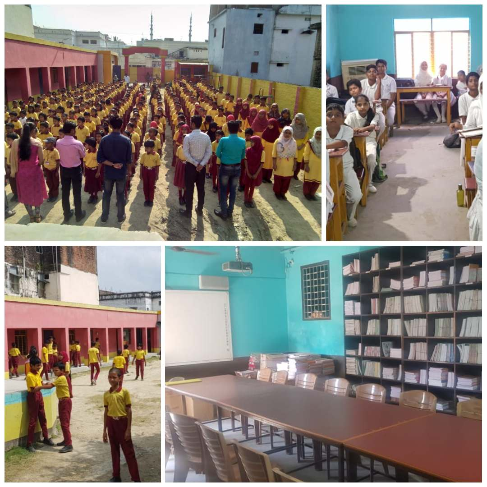
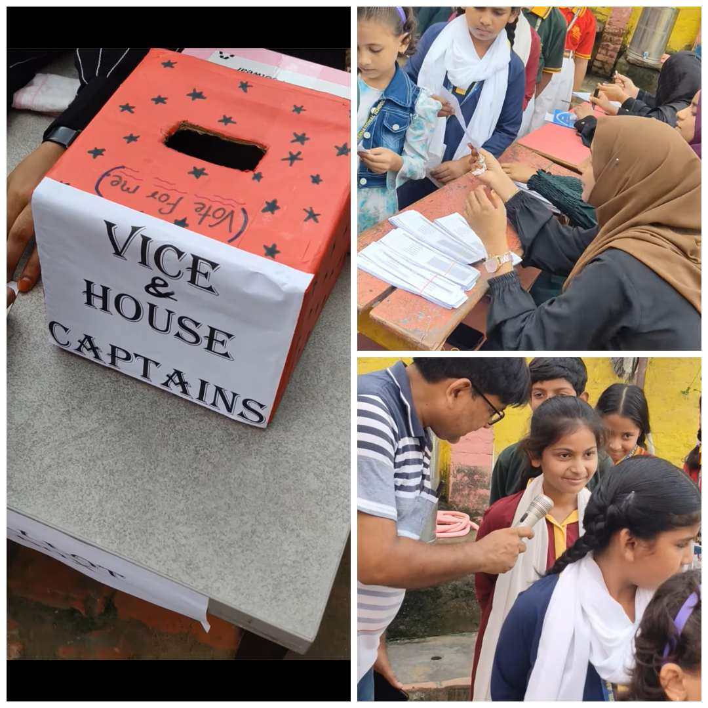

LITTLE DAFFODIL
AN INTERNATIONAL SCHOOL & A PLAY SCHOOL
Sitaron Se Bhi Aage...AN INTERNATIONAL SCHOOL & A PLAY SCHOOL
Sitaron Se Bhi Aage...
Education is the foundation of a strong society.
At Little Daffodil An International School, we believe that education is not merely the accumulation of knowledge, but the holistic development of a child’s personality, character, and intellect. Since our establishment in April 2015, our institution has been committed to nurturing young minds with dedication, vision, and excellence.
Operating under the esteemed guidance of Al Wazeer Educational & Welfare Trust, our school stands as a symbol of quality education with strong moral and ethical foundations.
Our academic framework is carefully designed in accordance with the National Curriculum Policy (NCP) and National Curriculum Framework (NCF). We emphasize:
Our goal is to prepare students not only for examinations but for life.
We strongly believe that quality education is the right of every child. Keeping this in mind, we strive to provide:
This ensures that every student, regardless of background, gets access to excellent learning opportunities.
Education at our institution goes beyond textbooks. We focus on:
We actively promote HOTS (Higher Order Thinking Skills) to encourage critical thinking, creativity, and problem-solving abilities among our students.
“A teacher is not just selected, but shaped.”
At Little Daffodil, we either choose teachers like diamonds or polish them into diamonds through continuous training, mentoring, and professional development. Our educators are dedicated to inspiring students and creating a positive learning environment.
Under the leadership of Dr. Khalid Mahmood Bharti, an academician with roots in Aligarh’s rich educational culture, the school carries forward a legacy of discipline, knowledge, and excellence. His vision reflects a blend of traditional values and modern education.
At Little Daffodil An International School, we don’t just educate — we transform lives, shape futures, and build a better society.Established on April 2015, our institution has grown steadily with 800+ students, supported by a strong team of teachers and staff. Our vision is to provide high-quality CBSE-based education with modern facilities like hostel and transport, combining traditional values with a forward-thinking approach.

One of the most remarkable qualities of our Principal is their exceptional communication skill. Their ability to interact with students, teachers, and parents in a polite, effective, and inspiring manner builds a strong and positive school environment.
“Discipline is the foundation of success.”
With this vision, they ensure that discipline is regulated in a constructive and student-friendly way, encouraging self-responsibility and respect among learners.
Under their guidance, the school has seen continuous improvement in:
Their leadership promotes a balanced approach where students excel not only in studies but also in personality, creativity, and physical development.
The Principal is deeply committed to:
With strong experience, visionary leadership, and a passion for education, our Principal continues to elevate Little Daffodil An International School towards new heights of excellence, ensuring every student receives the best opportunities to succeed in life.

Welcome to Little Daffodil An International School, where learning meets excellence. Our goal is to create a supportive and inspiring environment where every student feels valued and motivated. With the support of our experienced faculty (35+ teachers) and non-teaching staff (15+), we ensure smooth functioning and a student-friendly atmosphere. We emphasize discipline, creativity, and practical learning.
At Little Daffodil An International School, we are proud to have a highly experienced and dedicated Vice-Principal with over 25+ years of teaching experience, contributing significantly to the academic strength and discipline of the institution.
Our Vice-Principal has a rich teaching background, having served in various reputed schools across India as well as in Gulf countries. This diverse experience enables them to bring a blend of traditional values and modern global teaching practices into the school system.
With a strong command over the English language and effective communication skills, they play a key role in enhancing both teaching quality and student confidence.
The Vice-Principal takes pride in the success of their students, many of whom are now placed in prestigious positions across various fields.
Their continuous efforts contribute towards:
The Vice-Principal is committed to:
With vast experience, dedication, and a passion for teaching, our Vice-Principal continues to play a vital role in shaping the future of students and maintaining the high standards of Little Daffodil An International School.

Advanced Science & Computer Labs

Annual Sports Week Spirit

Morning Assembly & Modern Library

Republic Day Cultural Fest

Choir & Patriotic Presentations

Student Parade & Patriotism

Student Council Election Process

Academic Excellence & Scholarships